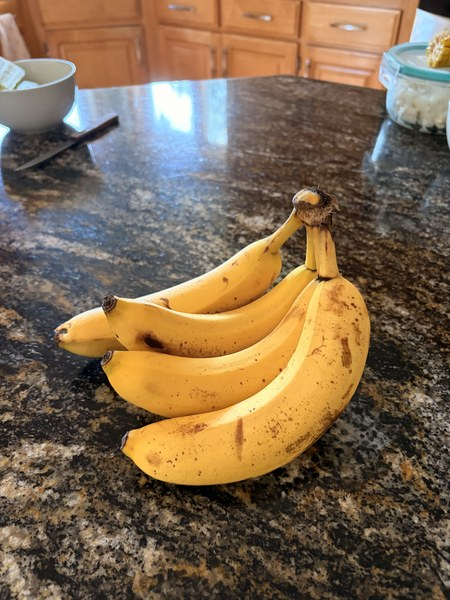
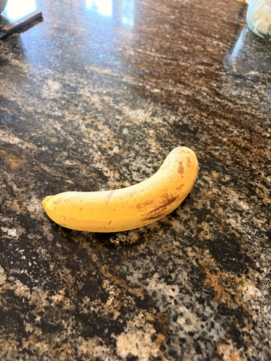
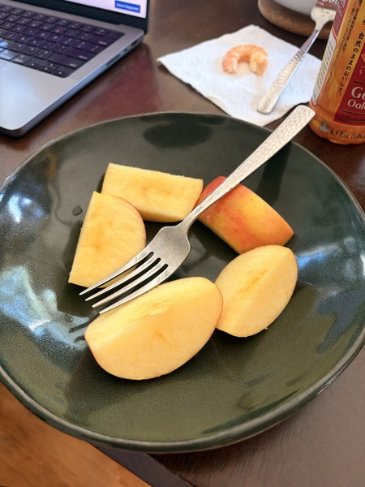

Text-to-Image Search with CLIP
A search interface that finds photos in a small collection from a written description.
Query: “a bunch of bananas”
#1 · 0.305

#2 · 0.279

#3 · 0.236

I used pretrained CLIP to encode a collection of 20 photos and rank them by cosine similarity to a text query. I cached the photo embeddings so each search only had to encode the query and score the existing vectors.
I built a Gradio interface that lets users enter a description and choose how many ranked results to see. I also compared query phrasings and examined close matches, like the apple slices ranked third for the banana query.